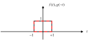
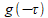
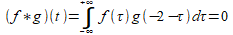
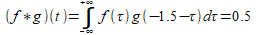
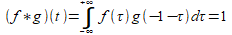
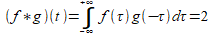
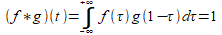
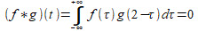
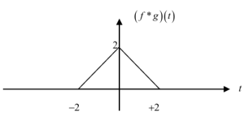
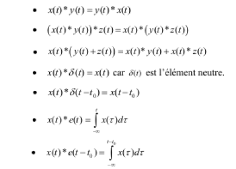

Explication graphique du produit de convolution
On peut expliquer le produit de convolution par un simple exemple :
Soit les deux signaux identiques représentés sur la figure ci-dessous :

On fait glisser 
Pour t=-2

Pour t=-1.5

pour t=-1

pour t=0

pour t=1

pour t=2

Enfin, on peut donner la fonction « convolution » de ces deux signaux et qui est représentée par la figure suivante :

Propriétés de produit de convolution
